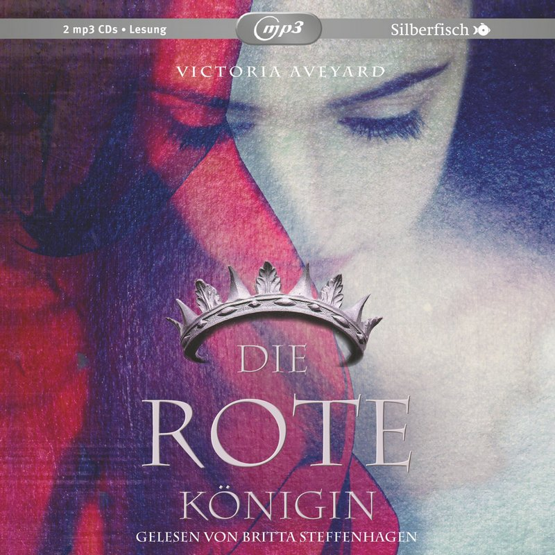

© HighscoreMusic
Auftakt einer faszinierenden Fantasy-Trilogie
In der Welt, in der Mare Barrow lebt, wird alles von der Farbe des Blutes bestimmt: Es gibt Menschen mit rotem und solche mit silbernem Blut. Mares Familie gehört zu den niederen Reds, deren Aufgabe es ist, der Silver-Elite zu dienen – denn die besitzen übernatürliche Kräfte, auf die sich ihre Herrschaft gründet.
Um einem Freund zu helfen, schleust Mare sich als Dienstmädchen in die Sommerresidenz des Königs ein. Und dort geschieht etwas Unerwartetes: Als sie bei einem Fest in Gefahr gerät, zeigt sich vor den Augen des versammelten Silver-Adels, dass auch sie eine besondere Fähigkeit besitzt – obwohl ihr Blut rot ist!
Um diese ungeheuerliche Tatsache zu vertuschen, zwingt sie der König, sich als verschollene Silver-Prinzessin auszugeben und verlobt sie mit seinem jüngsten Sohn. Dabei ist es dessen Bruder, der Thronfolger, der Mares Herz höher schlagen lässt. Doch von jetzt an gelten die Regeln des Hofes, Mare darf sich keine Fehler erlauben. Trotzdem nutzt sie ihre Position, um die aufkeimende Red-Rebellion zu unterstützen. Sie riskiert dabei ihr Leben – und das vieler anderer. Denn ihr Eingreifen setzt einen gefährlichen, tödlichen Tanz in Gang, bei dem Prinz gegen Prinz steht. Verstand gegen Herz. Und Mare zwischen allen.
Victoria Aveyard
Ungekürzte Lesung mit Britta Steffenhagen
2 mp3-CDs, 900 Minuten Laufzeit